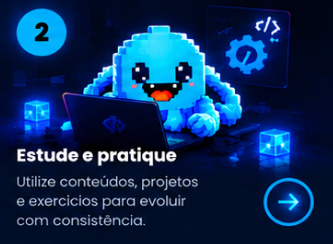
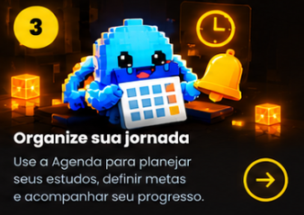

Front-end
Dê forma às suas ideias na web.
GUIA RÁPIDO
Seu ambiente completo para estudar, organizar, praticar e desenvolver sua carreira. Veja abaixo como usar o TaskFlow e aproveite ao máximo cada recurso.
Siga o passo a passo e descubra tudo o que você pode fazer.
Acesse a Biblioteca Técnica, Laboratório, Agenda, Área de Carreira e Gestor de IA.

Utilize conteúdos, projetos e exercícios para evoluir com consistência.

Use a Agenda para planejar seus estudos, definir metas e acompanhar seu progresso.
Desenvolva suas habilidades na Área de Carreira e conte com o Gestor de IA para tomar decisões mais eficazes.
Quatro áreas para conhecer.
Novas experiências por tópico virão nas próximas etapas.
Cada jornada tem seu ritmo. Comece pela curiosidade.
Documentação e conteúdos para você aprender e evoluir
Dê forma às suas ideias na web.
Conheça o que faz tudo acontecer.
Leve suas ideias para outras telas.
Escolha uma linguagem no Guia de Estudos para consultar sua documentação.